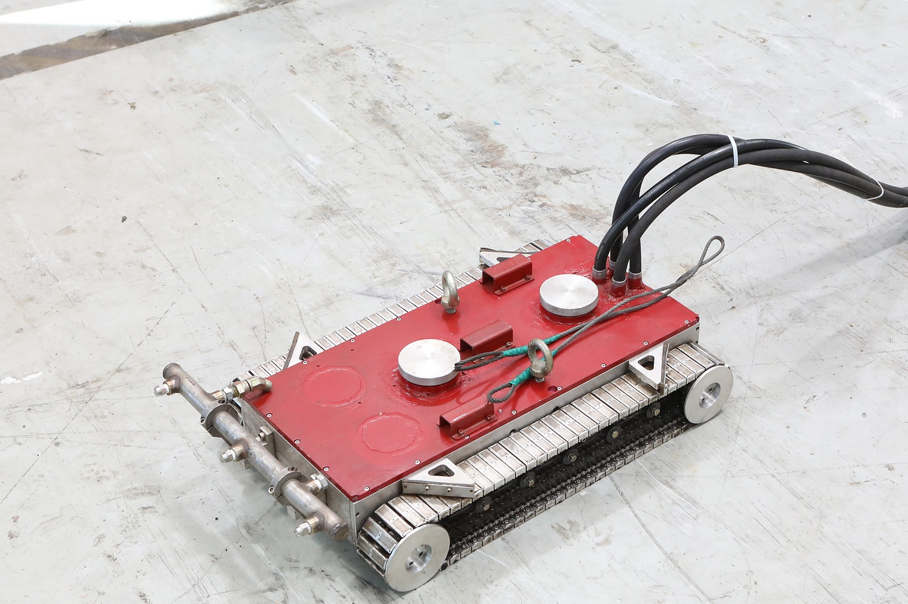
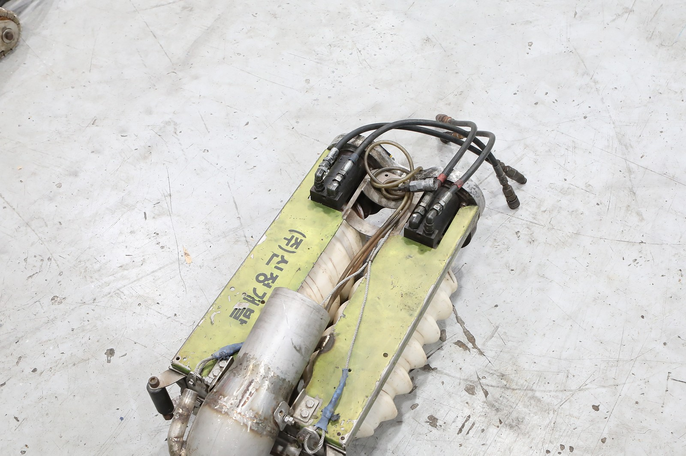
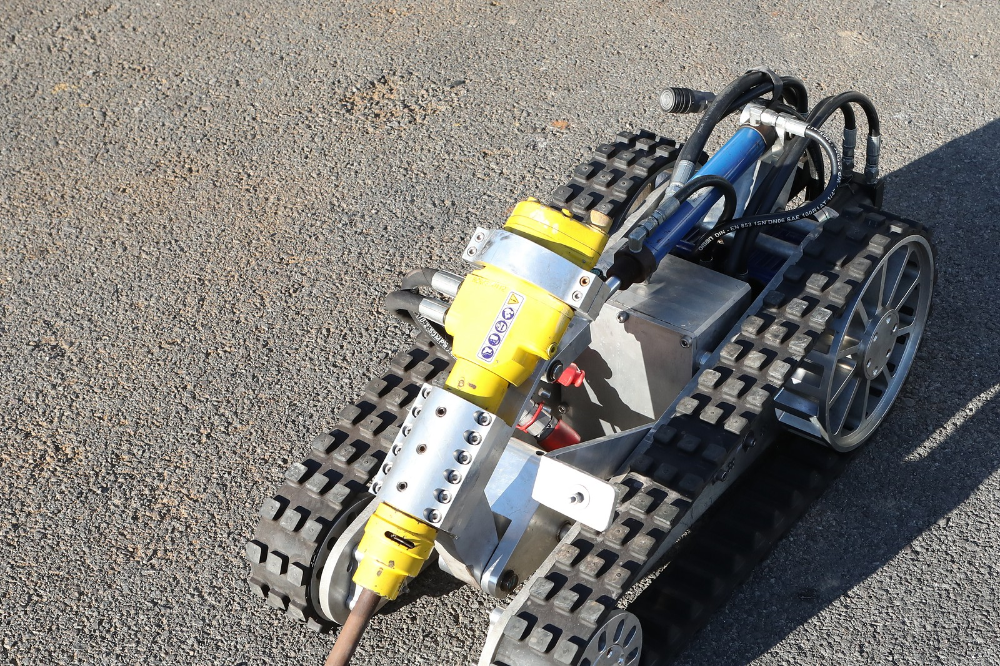

1992년 설립 · 산업설비 클리닝 전문기업
“사람이 없는 곳에인명 사고도 없다”
석유화학 · 정유 플랜트의 탱크와 반응기를 클리닝합니다. 2017년 기업부설연구소를 설립했고, 플랜트 설비를 클리닝하는 신정개발은 2017년 기업부설연구소를 설립했고, 무인 로봇을 자체 개발해 지금은 그 로봇이 작업자보다 먼저 설비에 투입됩니다.
위험한 공간에는 로봇이 먼저 들어갑니다연구개발부터 폐기물 감량까지, 신정개발의 다섯 단계연구개발부터 폐기물 감량까지 다섯 단계
현장 상담 · 문의설비 종류 · 일정 · 현장 위치를 알려 주시면 상담 시 안내해 드립니다.
※ 작업 순서를 쉽게 보여 드리기 위한 연출 그림입니다.
사업분야
다섯 분야의 작업을 직접 수행합니다.
탱크와 반응기부터 하수관로까지, 분야마다 작업 방법과 장비, 수행 실적을 소개합니다.


현장 사진
로봇과 작업자가 함께 일하는 현장입니다.


무인 솔루션
현장에 투입하는 신정개발의 로봇
현장에 투입하는 장비 세 가지와, 기업부설연구소에서 개발한 시제품 세 가지입니다.
로봇이 하는 일
 01흡입 · 파쇄
01흡입 · 파쇄탱크 · Pond 안의 위험 물질을 빨아들이거나 부숴서 회수합니다
무인 Vacuum 로봇 02퇴적물 처리
02퇴적물 처리Pond · 배수로 바닥에 쌓인 흙과 슬러지를 치웁니다
무인 로더 03고압 세척
03고압 세척좁은 공간의 설비를 고압수로 씻어 냅니다
무인 Jet Cleaner
04벽면 · 천장저장 탱크 벽면과 천장에 붙어 움직입니다
연구개발 시제품 · 벽면/천장 부착형 무인 로봇
05흡입 · 준설스크류로 움직이며 흡입 · 준설합니다
연구개발 시제품 · 흡입/준설 무인 로봇
06파쇄파쇄 장치로 대상물을 부숩니다
연구개발 시제품 · 파쇄 무인 로봇

회사 소개
성실하게 쌓아 온 시간이
성실하게 쌓아 온 시간이
지금의 신정개발입니다.
1992년 시작한 신정개발은 산업설비와 환경시설을 다루는 클리닝 전문기업입니다. 설비 유지보수, 촉매·충진물 작업, 준설과 시설 조사·보수를 해 왔습니다.
환경ISO 14001 환경경영 인증 (2017) · 환경부장관상 (2007) · 일반·지정폐기물 수집·운반업 허가 (2004·2006)